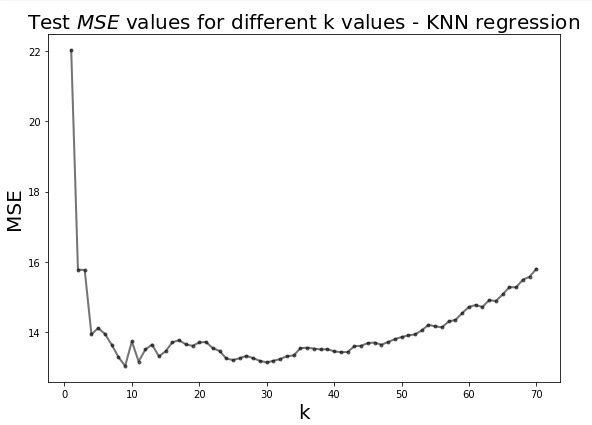

Key Word(s): Knn, Knn Regression, MSE, Data Plotting
Title :¶
Exercise: Finding the Best k in kNN Regression
Description :¶
The goal here is to find the value of k of the best performing model based on the test MSE.

Data Description:¶
Instructions:¶
- Read the data into a Pandas dataframe object.
- Select the sales column as the response variable and TV budget column as the predictor variable.
- Make a train-test split using sklearn.model_selection.train_test_split .
- Create a list of integer k values using numpy.linspace .
- For each value of k
- Fit a kNN regression on train set.
- Calculate MSE on test set and store it.
- Plot the test MSE values for each k.
- Find the k value associated with the lowest test MSE.
Hints:¶
train_test_split(X,y) Split arrays or matrices into random train and test subsets.
np.linspace() Returns evenly spaced numbers over a specified interval.
KNeighborsRegressor(n_neighbors=k_value) Regression-based on k-nearest neighbors.
model.predict() Predict the target for the provided data.
mean_squared_error() Computes the mean squared error regression loss.
dict.keys() Returns a view object that displays a list of all the keys in the dictionary.
dict.values() Returns a list of all the values available in a given dictionary.
plt.plot() Plot y versus x as lines and/or markers.
dict.items() Returns a list of dict's (key, value) tuple pairs.
Note: This exercise is auto-graded and you can try multiple attempts.
# Import necessary libraries
import numpy as np
import pandas as pd
import matplotlib.pyplot as plt
from sklearn.utils import shuffle
from sklearn.metrics import r2_score
from sklearn.metrics import mean_squared_error
from sklearn.neighbors import KNeighborsRegressor
from sklearn.model_selection import train_test_split
%matplotlib inline
Reading the standard Advertising dataset¶
# Read the file 'Advertising.csv' into a Pandas dataset
df = pd.read_csv('Advertising.csv')
# Take a quick look at the data
df.head()
# Set the 'TV' column as predictor variable
x = df[[___]]
# Set the 'Sales' column as response variable
y = df[___]
Train-Test split¶
### edTest(test_shape) ###
# Split the dataset in training and testing with 60% training set and
# 40% testing set
x_train, x_test, y_train, y_test = train_test_split(___,___,train_size=___,random_state=66)
### edTest(test_nums) ###
# Choosing k range from 1 to 70
k_value_min = 1
k_value_max = 70
# Create a list of integer k values between k_value_min and
# k_value_max using linspace
k_list = np.linspace(k_value_min,k_value_max,num=70,dtype=int)
Model fit¶
# Setup a grid for plotting the data and predictions
fig, ax = plt.subplots(figsize=(10,6))
# Create a dictionary to store the k value against MSE fit {k: MSE@k}
knn_dict = {}
# Variable used for altering the linewidth of values kNN models
j=0
# Loop over all k values
for k_value in k_list:
# Create a KNN Regression model for the current k
model = KNeighborsRegressor(n_neighbors=int(___))
# Fit the model on the train data
model.fit(x_train,y_train)
# Use the trained model to predict on the test data
y_pred = model.predict(___)
# Calculate the MSE of the test data predictions
MSE = ____
# Store the MSE values of each k value in the dictionary
knn_dict[k_value] = ___
# Helper code to plot the data and various kNN model predictions
colors = ['grey','r','b']
if k_value in [1,10,70]:
xvals = np.linspace(x.min(),x.max(),100)
ypreds = model.predict(xvals)
ax.plot(xvals, ypreds,'-',label = f'k = {int(k_value)}',linewidth=j+2,color = colors[j])
j+=1
ax.legend(loc='lower right',fontsize=20)
ax.plot(x_train, y_train,'x',label='test',color='k')
ax.set_xlabel('TV budget in $1000',fontsize=20)
ax.set_ylabel('Sales in $1000',fontsize=20)
plt.tight_layout()
Graph plot¶
# Plot a graph which depicts the relation between the k values and MSE
plt.figure(figsize=(8,6))
plt.plot(___, ___,'k.-',alpha=0.5,linewidth=2)
# Set the title and axis labels
plt.xlabel('k',fontsize=20)
plt.ylabel('MSE',fontsize = 20)
plt.title('Test $MSE$ values for different k values - KNN regression',fontsize=20)
plt.tight_layout()
Find the best knn model¶
### edTest(test_mse) ###
# Find the lowest MSE among all the kNN models
min_mse = min(___)
# Use list comprehensions to find the k value associated with the lowest MSE
best_model = [key for (key, value) in knn_dict.items() if value == min_mse]
# Print the best k-value
print ("The best k value is ",best_model,"with a MSE of ", min_mse)
### edTest(test_chow1) ###
# Submit an answer choice as a string below (eg. if you choose option A, put 'A')
answer1 = '___'
# Helper code to compute the R2_score of your best model
model = KNeighborsRegressor(n_neighbors=best_model[0])
model.fit(x_train,y_train)
y_pred_test = model.predict(x_test)
# Print the R2 score of the model
print(f"The R2 score for your model is {r2_score(y_test, y_pred_test)}")
### edTest(test_chow2) ###
# Submit an answer choice as a string below (eg. if you choose option A, put 'A')
answer2 = '___'